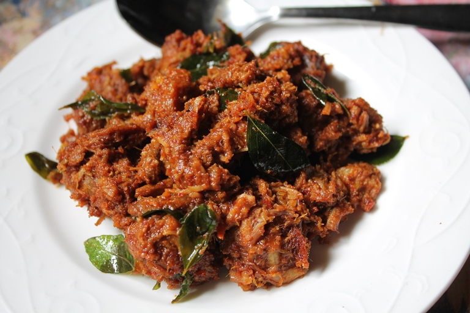

Ingredients:
1)500 gms mutton pieces with bones
2)2 Large Onions fine4ly sliced
3)2 - 3 green chillies slit lengthwise
4)2 tblsp Ginger Garlic Paste
5)2 tblsp Curd (Dahi)
6)1 tsp Red Chilly Powder
7)1 tsp cumin seeds
8)4 tblsp Mustard Oil
9)Salt to taste
Masala To Grind:
1)1 tsp Black Peppercorn
2)2 tbsp coriander seeds
3)3 - 4 cloves
4)2 tsp Fennel Seeds (Saunf)
5)1 inch cinnamon stick
6)1 Black Cardamom
For Garnish:
1)1 tblsp finely chopped Coriander Leaves
How to make Mutton Fry :
1.)Heat a tawa and dry roast all the ingredients under the Masala section. Make sure not to burn the whole masala.
2)When little cool grind to fine powder. Keep aside.
3)Take a heavy bottom kadai and heat the oil and add cumin seeds.
4)When they begin to sputter add the sliced onions. Fry them till the onions change the color to dark brown.
5)Add the ginger garlic paste. Cook till all the raw smell disappears.
6)Add the mutton pieces and fry them till all the juices get absorbed and the pieces get cooked.
7)Now add the grinded powder masala, red chilly and cook for 1 minute and then add the whisked curd.
8)Let the curd get fully absorbed and oil gets released from the sides.
9)If the mutton is still uncooked add 1/2 cup of warm water and cook further till all the water dries out.
10)All the pieces should be coated with all the masala.
11)Finally add the green chillies. Mix well.
12)Cook for another minute.
13)Take out the mutton fry in a bowl and garnish with chopped green coriander.